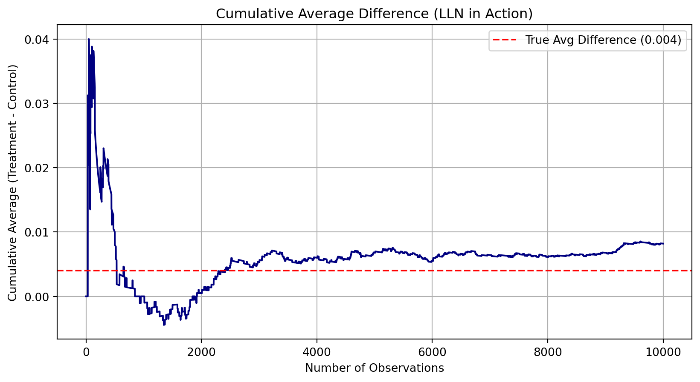

=== Data Overview ===
<class 'pandas.core.frame.DataFrame'>
RangeIndex: 50083 entries, 0 to 50082
Data columns (total 51 columns):
# Column Non-Null Count Dtype
--- ------ -------------- -----
0 treatment 50083 non-null int8
1 control 50083 non-null int8
2 ratio 50083 non-null category
3 ratio2 50083 non-null int8
4 ratio3 50083 non-null int8
5 size 50083 non-null category
6 size25 50083 non-null int8
7 size50 50083 non-null int8
8 size100 50083 non-null int8
9 sizeno 50083 non-null int8
10 ask 50083 non-null category
11 askd1 50083 non-null int8
12 askd2 50083 non-null int8
13 askd3 50083 non-null int8
14 ask1 50083 non-null int16
15 ask2 50083 non-null int16
16 ask3 50083 non-null int16
17 amount 50083 non-null float32
18 gave 50083 non-null int8
19 amountchange 50083 non-null float32
20 hpa 50083 non-null float32
21 ltmedmra 50083 non-null int8
22 freq 50083 non-null int16
23 years 50082 non-null float64
24 year5 50083 non-null int8
25 mrm2 50082 non-null float64
26 dormant 50083 non-null int8
27 female 48972 non-null float64
28 couple 48935 non-null float64
29 state50one 50083 non-null int8
30 nonlit 49631 non-null float64
31 cases 49631 non-null float64
32 statecnt 50083 non-null float32
33 stateresponse 50083 non-null float32
34 stateresponset 50083 non-null float32
35 stateresponsec 50080 non-null float32
36 stateresponsetminc 50080 non-null float32
37 perbush 50048 non-null float32
38 close25 50048 non-null float64
39 red0 50048 non-null float64
40 blue0 50048 non-null float64
41 redcty 49978 non-null float64
42 bluecty 49978 non-null float64
43 pwhite 48217 non-null float32
44 pblack 48047 non-null float32
45 page18_39 48217 non-null float32
46 ave_hh_sz 48221 non-null float32
47 median_hhincome 48209 non-null float64
48 powner 48214 non-null float32
49 psch_atlstba 48215 non-null float32
50 pop_propurban 48217 non-null float32
dtypes: category(3), float32(16), float64(12), int16(4), int8(16)
memory usage: 8.9 MB
None
=== First 5 Rows ===
treatment control ratio ratio2 ratio3 size size25 size50 \
0 0 1 Control 0 0 Control 0 0
1 0 1 Control 0 0 Control 0 0
2 1 0 1 0 0 $100,000 0 0
3 1 0 1 0 0 Unstated 0 0
4 1 0 1 0 0 $50,000 0 1
size100 sizeno ... redcty bluecty pwhite pblack page18_39 \
0 0 0 ... 0.0 1.0 0.446493 0.527769 0.317591
1 0 0 ... 1.0 0.0 NaN NaN NaN
2 1 0 ... 0.0 1.0 0.935706 0.011948 0.276128
3 0 1 ... 1.0 0.0 0.888331 0.010760 0.279412
4 0 0 ... 0.0 1.0 0.759014 0.127421 0.442389
ave_hh_sz median_hhincome powner psch_atlstba pop_propurban
0 2.10 28517.0 0.499807 0.324528 1.0
1 NaN NaN NaN NaN NaN
2 2.48 51175.0 0.721941 0.192668 1.0
3 2.65 79269.0 0.920431 0.412142 1.0
4 1.85 40908.0 0.416072 0.439965 1.0
[5 rows x 51 columns]
=== Descriptive Statistics ===
treatment control ratio ratio2 ratio3 \
count 50083.000000 50083.000000 50083 50083.000000 50083.000000
unique NaN NaN 4 NaN NaN
top NaN NaN Control NaN NaN
freq NaN NaN 16687 NaN NaN
mean 0.666813 0.333187 NaN 0.222311 0.222211
std 0.471357 0.471357 NaN 0.415803 0.415736
min 0.000000 0.000000 NaN 0.000000 0.000000
25% 0.000000 0.000000 NaN 0.000000 0.000000
50% 1.000000 0.000000 NaN 0.000000 0.000000
75% 1.000000 1.000000 NaN 0.000000 0.000000
max 1.000000 1.000000 NaN 1.000000 1.000000
size size25 size50 size100 sizeno ... \
count 50083 50083.000000 50083.000000 50083.000000 50083.000000 ...
unique 5 NaN NaN NaN NaN ...
top Control NaN NaN NaN NaN ...
freq 16687 NaN NaN NaN NaN ...
mean NaN 0.166723 0.166623 0.166723 0.166743 ...
std NaN 0.372732 0.372643 0.372732 0.372750 ...
min NaN 0.000000 0.000000 0.000000 0.000000 ...
25% NaN 0.000000 0.000000 0.000000 0.000000 ...
50% NaN 0.000000 0.000000 0.000000 0.000000 ...
75% NaN 0.000000 0.000000 0.000000 0.000000 ...
max NaN 1.000000 1.000000 1.000000 1.000000 ...
redcty bluecty pwhite pblack page18_39 \
count 49978.000000 49978.000000 48217.000000 48047.000000 48217.000000
unique NaN NaN NaN NaN NaN
top NaN NaN NaN NaN NaN
freq NaN NaN NaN NaN NaN
mean 0.510245 0.488715 0.819599 0.086710 0.321694
std 0.499900 0.499878 0.168560 0.135868 0.103039
min 0.000000 0.000000 0.009418 0.000000 0.000000
25% 0.000000 0.000000 0.755845 0.014729 0.258311
50% 1.000000 0.000000 0.872797 0.036554 0.305534
75% 1.000000 1.000000 0.938827 0.090882 0.369132
max 1.000000 1.000000 1.000000 0.989622 0.997544
ave_hh_sz median_hhincome powner psch_atlstba \
count 48221.000000 48209.000000 48214.000000 48215.000000
unique NaN NaN NaN NaN
top NaN NaN NaN NaN
freq NaN NaN NaN NaN
mean 2.429012 54815.700533 0.669418 0.391661
std 0.378105 22027.316665 0.193405 0.186599
min 0.000000 5000.000000 0.000000 0.000000
25% 2.210000 39181.000000 0.560222 0.235647
50% 2.440000 50673.000000 0.712296 0.373744
75% 2.660000 66005.000000 0.816798 0.530036
max 5.270000 200001.000000 1.000000 1.000000
pop_propurban
count 48217.000000
unique NaN
top NaN
freq NaN
mean 0.871968
std 0.258633
min 0.000000
25% 0.884929
50% 1.000000
75% 1.000000
max 1.000000
[11 rows x 51 columns]A Replication of Karlan and List (2007)
Introduction
Dean Karlan at Yale and John List at the University of Chicago conducted a field experiment to test the effectiveness of different fundraising letters. They sent out 50,000 fundraising letters to potential donors, randomly assigning each letter to one of three treatments: a standard letter, a matching grant letter, or a challenge grant letter. They published the results of this experiment in the American Economic Review in 2007. The article and supporting data are available from the AEA website and from Innovations for Poverty Action as part of Harvard’s Dataverse.
The original experiment was conducted in partnership with a nonprofit that supported economically disadvantaged children. The researchers sent out 50,000 fundraising letters to potential donors, randomly assigning each recipient to one of three treatment groups:
- Standard Letter (Control): A basic appeal describing the mission of the organization and requesting support.
- Matching Grant Treatment: A letter stating that donations would be matched dollar-for-dollar by a lead donor, up to a specific amount.
- Challenge Grant Treatment: A letter explaining that a lead donor had pledged a large donation, but only if a threshold level of additional contributions was met.
The treatments were randomized to ensure internal validity, and the primary outcomes measured were: - A binary indicator of whether a donation was made - The dollar amount donated
By comparing outcomes across the three groups, Karlan and List aimed to uncover how different types of financial incentives (matching vs. challenge grants) influence donation behavior. The results showed that matching grants significantly increased both the likelihood of donating and the average donation amount, while challenge grants had a weaker and more ambiguous impact.
This experiment has since become a cornerstone in the field of behavioral economics and charitable giving, demonstrating how small shifts in message framing can meaningfully alter real-world behavior.
This project seeks to replicate their results.
Data
Description
This dataset contains information used in Karlan & List (2007), including treatment indicators, match ratios, suggested donation amounts, and past giving behavior. It is used to evaluate the effect of matching donations in a fundraising experiment.
| Variable | Description |
|---|---|
treatment |
Treatment |
control |
Control |
ratio |
Match ratio |
ratio2 |
2:1 match ratio |
ratio3 |
3:1 match ratio |
size |
Match threshold |
size25 |
$25,000 match threshold |
size50 |
$50,000 match threshold |
size100 |
$100,000 match threshold |
sizeno |
Unstated match threshold |
ask |
Suggested donation amount |
askd1 |
Suggested donation was highest previous contribution |
askd2 |
Suggested donation was 1.25 x highest previous contribution |
askd3 |
Suggested donation was 1.50 x highest previous contribution |
ask1 |
Highest previous contribution (for suggestion) |
ask2 |
1.25 x highest previous contribution (for suggestion) |
ask3 |
1.50 x highest previous contribution (for suggestion) |
amount |
Dollars given |
gave |
Gave anything |
amountchange |
Change in amount given |
hpa |
Highest previous contribution |
ltmedmra |
Small prior donor: last gift was less than median $35 |
freq |
Number of prior donations |
years |
Number of years since initial donation |
year5 |
At least 5 years since initial donation |
mrm2 |
Number of months since last donation |
dormant |
Already donated in 2005 |
female |
Female |
couple |
Couple |
state50one |
State tag: 1 for one observation of each of 50 states; 0 otherwise |
nonlit |
Nonlitigation |
cases |
Court cases from state in 2004-5 in which organization was involved |
statecnt |
Percent of sample from state |
stateresponse |
Proportion of sample from the state who gave |
stateresponset |
Proportion of treated sample from the state who gave |
stateresponsec |
Proportion of control sample from the state who gave |
stateresponsetminc |
stateresponset - stateresponsec |
perbush |
State vote share for Bush |
close25 |
State vote share for Bush between 47.5% and 52.5% |
red0 |
Red state |
blue0 |
Blue state |
redcty |
Red county |
bluecty |
Blue county |
pwhite |
Proportion white within zip code |
pblack |
Proportion black within zip code |
page18_39 |
Proportion age 18-39 within zip code |
ave_hh_sz |
Average household size within zip code |
median_hhincome |
Median household income within zip code |
powner |
Proportion house owner within zip code |
psch_atlstba |
Proportion who finished college within zip code |
pop_propurban |
Proportion of population urban within zip code |
::::
Balance Test
As an ad hoc test of the randomization mechanism, I provide a series of tests that compare aspects of the treatment and control groups to assess whether they are statistically significantly different from one another.
=== mrm2 (Months Since Last Donation) ===
T-test: T-stat = 0.1195, P = 0.9049
OLS Regression Results
==============================================================================
Dep. Variable: mrm2 R-squared: 0.000
Model: OLS Adj. R-squared: -0.000
Method: Least Squares F-statistic: 0.01428
Date: Mon, 09 Jun 2025 Prob (F-statistic): 0.905
Time: 21:14:51 Log-Likelihood: -1.9585e+05
No. Observations: 50082 AIC: 3.917e+05
Df Residuals: 50080 BIC: 3.917e+05
Df Model: 1
Covariance Type: nonrobust
==============================================================================
coef std err t P>|t| [0.025 0.975]
------------------------------------------------------------------------------
intercept 12.9981 0.094 138.979 0.000 12.815 13.181
treatment 0.0137 0.115 0.119 0.905 -0.211 0.238
==============================================================================
Omnibus: 8031.352 Durbin-Watson: 2.004
Prob(Omnibus): 0.000 Jarque-Bera (JB): 12471.135
Skew: 1.163 Prob(JB): 0.00
Kurtosis: 3.751 Cond. No. 3.23
==============================================================================
Notes:
[1] Standard Errors assume that the covariance matrix of the errors is correctly specified.
=== amount (Previous Donation Amount) ===
T-test: T-stat = 1.8605, P = 0.0628
OLS Regression Results
==============================================================================
Dep. Variable: amount R-squared: 0.000
Model: OLS Adj. R-squared: 0.000
Method: Least Squares F-statistic: 3.461
Date: Mon, 09 Jun 2025 Prob (F-statistic): 0.0628
Time: 21:14:51 Log-Likelihood: -1.7946e+05
No. Observations: 50083 AIC: 3.589e+05
Df Residuals: 50081 BIC: 3.589e+05
Df Model: 1
Covariance Type: nonrobust
==============================================================================
coef std err t P>|t| [0.025 0.975]
------------------------------------------------------------------------------
intercept 0.8133 0.067 12.063 0.000 0.681 0.945
treatment 0.1536 0.083 1.861 0.063 -0.008 0.315
==============================================================================
Omnibus: 96861.113 Durbin-Watson: 2.008
Prob(Omnibus): 0.000 Jarque-Bera (JB): 240735713.635
Skew: 15.297 Prob(JB): 0.00
Kurtosis: 341.269 Cond. No. 3.23
==============================================================================
Notes:
[1] Standard Errors assume that the covariance matrix of the errors is correctly specified.These results show that randomization appears to have worked. There are no statistically significant differences between the treatment and control groups on these baseline characteristics. This is important because it supports the internal validity of the experiment — we can reasonably believe that any differences in donation outcomes later on were caused by the treatment and not by pre-existing differences.
This is exactly why Table 1 is included in Karlan & List (2007) — to show that the treatment assignment was random and the groups were comparable at baseline.
Experimental Results
Charitable Contribution Made
First, I analyze whether matched donations lead to an increased response rate of making a donation.
T-test: t = 3.1014, p = 0.0019
OLS Regression Results
==============================================================================
Dep. Variable: donated R-squared: 0.000
Model: OLS Adj. R-squared: 0.000
Method: Least Squares F-statistic: 9.618
Date: Mon, 09 Jun 2025 Prob (F-statistic): 0.00193
Time: 21:14:51 Log-Likelihood: 26630.
No. Observations: 50083 AIC: -5.326e+04
Df Residuals: 50081 BIC: -5.324e+04
Df Model: 1
Covariance Type: nonrobust
==============================================================================
coef std err t P>|t| [0.025 0.975]
------------------------------------------------------------------------------
intercept 0.0179 0.001 16.225 0.000 0.016 0.020
treatment 0.0042 0.001 3.101 0.002 0.002 0.007
==============================================================================
Omnibus: 59814.280 Durbin-Watson: 2.005
Prob(Omnibus): 0.000 Jarque-Bera (JB): 4317152.727
Skew: 6.740 Prob(JB): 0.00
Kurtosis: 46.440 Cond. No. 3.23
==============================================================================
Notes:
[1] Standard Errors assume that the covariance matrix of the errors is correctly specified.Optimization terminated successfully.
Current function value: 0.100443
Iterations 7
Probit Regression Results
==============================================================================
Dep. Variable: donated No. Observations: 50083
Model: Probit Df Residuals: 50081
Method: MLE Df Model: 1
Date: Mon, 09 Jun 2025 Pseudo R-squ.: 0.0009783
Time: 21:14:52 Log-Likelihood: -5030.5
converged: True LL-Null: -5035.4
Covariance Type: nonrobust LLR p-value: 0.001696
==============================================================================
coef std err z P>|z| [0.025 0.975]
------------------------------------------------------------------------------
intercept -2.1001 0.023 -90.073 0.000 -2.146 -2.054
treatment 0.0868 0.028 3.113 0.002 0.032 0.141
==============================================================================To see if matching donations increased the chance someone donated at all, I compared donation rates between the treatment and control groups.
The bar plot shows a clear difference: people in the treatment group donated at a higher rate than those in the control group.
Using both a t-test and a linear regression, I confirmed that this difference is statistically significant. This means the treatment group, who received a matching offer, was more likely to make any donation.
I also ran a probit regression, which models the probability of making a donation. The results again showed that being assigned to the treatment group had a positive effect on whether someone donated.
What we learn This tells us something important about human behavior: people are more likely to give when they know their donation will be matched. Even though the match doesn’t change their actual out-of-pocket cost, it creates a stronger sense of impact. That seems to motivate giving.
In the context of charitable giving, this suggests that match offers are an effective tool to increase participation, not just donation amounts. This aligns with the results shown in Table 2a Panel A and Table 3 of the paper. NOTE: Linear regression results appear replicate Table 3 column 1 in the paper. Probit results do not, despite Table 3 indicating its results come from probit regressions…
Differences between Match Rates
Next, I assess the effectiveness of different sizes of matched donations on the response rate.
1:1 vs 2:1 — T = nan, P = nan
2:1 vs 3:1 — T = nan, P = nan OLS Regression Results
==============================================================================
Dep. Variable: gave R-squared: 0.000
Model: OLS Adj. R-squared: 0.000
Method: Least Squares F-statistic: nan
Date: Mon, 09 Jun 2025 Prob (F-statistic): nan
Time: 21:14:52 Log-Likelihood: 26625.
No. Observations: 50083 AIC: -5.325e+04
Df Residuals: 50082 BIC: -5.324e+04
Df Model: 0
Covariance Type: nonrobust
==============================================================================
coef std err t P>|t| [0.025 0.975]
------------------------------------------------------------------------------
intercept 0.0206 0.001 32.493 0.000 0.019 0.022
ratio2 0 0 nan nan 0 0
ratio3 0 0 nan nan 0 0
==============================================================================
Omnibus: 59825.030 Durbin-Watson: 2.005
Prob(Omnibus): 0.000 Jarque-Bera (JB): 4320413.510
Skew: 6.742 Prob(JB): 0.00
Kurtosis: 46.457 Cond. No. inf
==============================================================================
Notes:
[1] Standard Errors assume that the covariance matrix of the errors is correctly specified.
[2] The smallest eigenvalue is 0. This might indicate that there are
strong multicollinearity problems or that the design matrix is singular./opt/conda/lib/python3.12/site-packages/statsmodels/regression/linear_model.py:1966: RuntimeWarning:
divide by zero encountered in scalar divide
Response rate (1:1): nan
Response rate (2:1): nan
Response rate (3:1): nan
2:1 - 1:1 difference: nan
3:1 - 2:1 difference: nanSize of Charitable Contribution
In this subsection, I analyze the effect of the size of matched donation on the size of the charitable contribution.
OLS Regression Results
==============================================================================
Dep. Variable: amount R-squared: 0.000
Model: OLS Adj. R-squared: 0.000
Method: Least Squares F-statistic: 3.461
Date: Mon, 09 Jun 2025 Prob (F-statistic): 0.0628
Time: 21:14:52 Log-Likelihood: -1.7946e+05
No. Observations: 50083 AIC: 3.589e+05
Df Residuals: 50081 BIC: 3.589e+05
Df Model: 1
Covariance Type: nonrobust
==============================================================================
coef std err t P>|t| [0.025 0.975]
------------------------------------------------------------------------------
intercept 0.8133 0.067 12.063 0.000 0.681 0.945
treatment 0.1536 0.083 1.861 0.063 -0.008 0.315
==============================================================================
Omnibus: 96861.113 Durbin-Watson: 2.008
Prob(Omnibus): 0.000 Jarque-Bera (JB): 240735713.635
Skew: 15.297 Prob(JB): 0.00
Kurtosis: 341.269 Cond. No. 3.23
==============================================================================
Notes:
[1] Standard Errors assume that the covariance matrix of the errors is correctly specified.
T-test (all): t = 1.8605, p = 0.0628 OLS Regression Results
==============================================================================
Dep. Variable: amount R-squared: 0.000
Model: OLS Adj. R-squared: -0.001
Method: Least Squares F-statistic: 0.3374
Date: Mon, 09 Jun 2025 Prob (F-statistic): 0.561
Time: 21:14:52 Log-Likelihood: -5326.8
No. Observations: 1034 AIC: 1.066e+04
Df Residuals: 1032 BIC: 1.067e+04
Df Model: 1
Covariance Type: nonrobust
==============================================================================
coef std err t P>|t| [0.025 0.975]
------------------------------------------------------------------------------
intercept 45.5403 2.423 18.792 0.000 40.785 50.296
treatment -1.6684 2.872 -0.581 0.561 -7.305 3.968
==============================================================================
Omnibus: 587.258 Durbin-Watson: 2.031
Prob(Omnibus): 0.000 Jarque-Bera (JB): 5623.279
Skew: 2.464 Prob(JB): 0.00
Kurtosis: 13.307 Cond. No. 3.49
==============================================================================
Notes:
[1] Standard Errors assume that the covariance matrix of the errors is correctly specified.
T-test (donors only): t = -0.5808, p = 0.5615Simulation Experiment
As a reminder of how the t-statistic “works,” in this section I use simulation to demonstrate the Law of Large Numbers and the Central Limit Theorem.
Suppose the true distribution of respondents who do not get a charitable donation match is Bernoulli with probability p=0.018 that a donation is made.
Further suppose that the true distribution of respondents who do get a charitable donation match of any size is Bernoulli with probability p=0.022 that a donation is made.
Law of Large Numbers

To show how the Law of Large Numbers (LLN) works, I simulated 10,000 random draws from each group’s true donation distribution:
Control group had a 1.8% chance of donating (p = 0.018)
Treatment group had a 2.2% chance (p = 0.022)
At each draw, I calculated the difference between treatment and control and then plotted the cumulative average of those differences.
What we learn: Early in the plot, the average difference jumps around — this is due to random noise when sample sizes are small.
But as more data is added, the average settles down near the true expected treatment effect: 0.004.
This is the Law of Large Numbers in action: with more observations, our sample average converges to the true population average.
This helps explain why large sample sizes make our experimental estimates more reliable and less sensitive to random variation.
Central Limit Theorem
To visualize the Central Limit Theorem (CLT), I created four histograms showing the sampling distribution of the average difference in donation rates between the treatment and control groups. For each sample size — 50, 200, 500, and 1000 — I simulated 1000 experiments and plotted the results.
What we learn: With small samples (like 50), the distribution is wide and irregular — more influenced by random chance.
As the sample size increases, the distributions become tighter and more bell-shaped.
By the time we reach 1000 draws, the sampling distribution is narrow and symmetric, closely resembling a normal distribution centered near the true difference (0.004).
This shows the Central Limit Theorem in action: as the number of observations increases, the average of random variables (in this case, donation differences) becomes more predictable and normally distributed — even if the original data is binary.
This helps us understand why t-tests and confidence intervals work well in large-sample experiments — because the underlying averages behave in a stable, normal way.